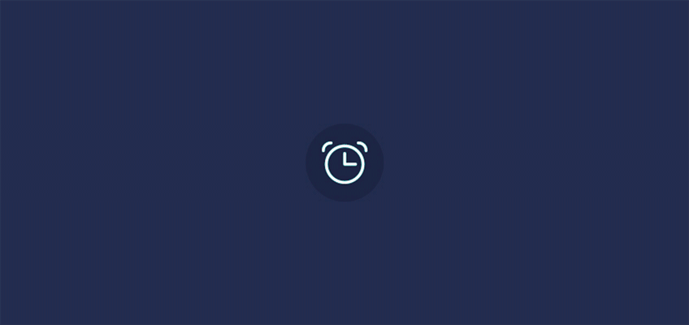
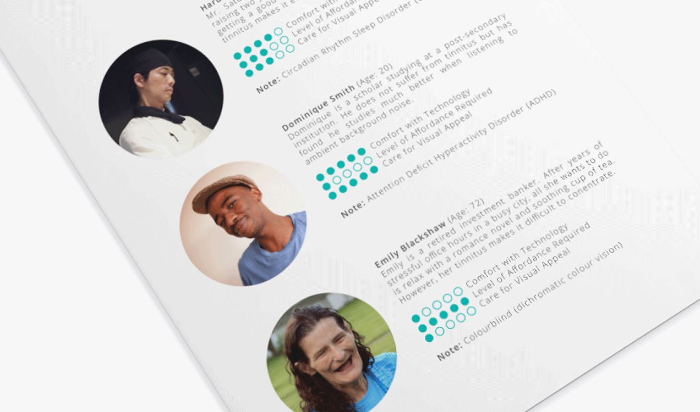
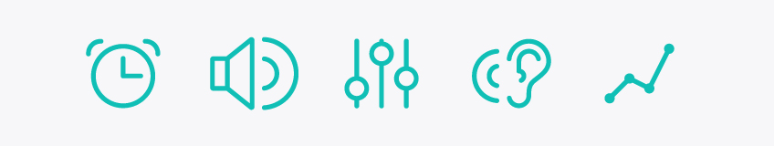

What is Tinnitus, what is EE?
Tinnitus is a condition characterized by ringing, swishing, or other noises that appear to be originating in the ear; usually a symptom of some other underlying condition. The nuisance makes sleeping more difficult and disrupts times of concentration. Although there is currently no cure, those who suffer from tinnitus may undergo expensive therapy to train their brain to ignore the disability. EEE was created to provide cheap at-home treatment.
EEE is an app for all
What if you don't have tinnitus? There are still major health benefits to using EEE. It is a mobile application that aims to improve the quality of life during waking and sleeping hours. Sleeping better can greatly increase an individual’s immune system, memory, mood, weight control and concentration. Many studies have shown the advantages of listening to ambient noise while studying, working or relaxing.

Find your Tinnitus Tone with EEE
Use the sliders to find a frequency that best matches your tinnitus. Once selected, EEE will craft a personalized white noise that will dull your tinnitus and lessen the distress.

Getting a Better Night's Rest
Using your phone's accelerometer and your smart watch's heart rate monitor, EEE can detect your deepness in sleep. Using this information, EEE can adjust the volume of your tinnitus tone until you fall in REM cycles. Long-term plans will be created to slowly reduce your reliance on the tone and allow you to reach REM cycles independently.
EEE utilizes an experimental interface to set your alarm. I wanted to tackle a few issues I had with my own alarm on my personal phone:
There was a lot of wasted real estate as I could only see 3 numerical values at a time (and two of them were cut off)
It was difficult to set a time as I had to slow down every once in a while to actually ready the numbers
Having to swipe repetitively significantly slowed down the process
By creating an interface that associates the numerical values with their respective locations on an analog clock, users were able to set times more quickly than the native Android alarm app.

User Personas
Three fictional user personas were produced to create a memorable cast of characters to focus on. Selecting a diverse mix was required for the large target audience. They effectively incorporated empathy in the design process when making and defending design decisions.
Content Display
During group usability interviews, there was a debate on how the descriptions should be displayed on the screen where you could preview and select which sound/noise profile you preferred. Please refer to figure 1.0: originally users were able to tap on the arrows [1] to expand the description [2] for a selected sound/noise. The arrow [1] may be tapped again to hide the description [2]. Some users complained this was too much tapping.
Split A/B Testing
In response to this feedback, I created a new prototype. Please refer to figure 1.1: users are now able to tap a button [3] to expand all the descriptions [2] at once. The button [3] can be tapped again to hide all the descriptions [2]. A gradient opacity masked [4] was used to signify there was more information accessible by scrolling.

I conducted another study with live prototypes and 3 separate groups. I created 2 live prototypes with simple HTML, CSS and JavaScript. These windows were shrunk on the desktop screen to resemble mobile devices.
Group A |
Group B |
Group C |
Group A Results |
Group B Results |
Group C Results |
When presented with design figure 1.0, 100% of individuals expanded all the descriptions but did not bother closing any of them. After analyzing these results, design (figure) 1.1 was implemented.

Flat vs Skeumorphic
There has been on-going trend of flat design, slowly weeding out skeumorphic approaches. Flat design is often purely visual, resonating with designer's love of minimalist concepts. The simplistic and clean results create visually appealing and outstanding results. However, taking away all these cues and signifiers has a great impact on usability. Many young users experience little difficulty with flat design; they are familiar with common affordance patterns across multiple platforms and applications. However, an older audience unfamiliar with common trends may have difficulty defining and differentiating interface elements. The solution was to use subtle gradients, layering, drop shadows and a hint of skeumorphic design to retain a sense of the tangible world to please older audiences while still looking visually pleasing and up-to-date to please younger audiences.
A study group was created consisting of individuals above the age of 30 who were uncomfortable with technology. In figure 2.0, 40% of individuals were unable to recognize the flat version as an interactable UI element, 60% took more than 10 seconds to realize it was interactable. In figure 2.1, 20% of the individuals were unable to recognize the flat version as an interactive UI element. In both figure 2.0 and 2.1, 100% of the subjects were able to recognize the later version ("touch of skeuomorphism") as an interactable UI element within 5 seconds.

Creating Affordance
Explicit Affordance
Timed explicit affordance was used in order to please a younger audience (prefers minimalistic design) and an older audience (prefers straight-forward design).The alarm screen initially appears clean and simple. If they user is idle for 5 seconds, a ripple effect animates on the dial as a clue to interact with this element. Additionally instruction text appears to guide the user. These are unambiguous signifiers that are easy to understand.

Hidden Affordance
A hamburger menu is a common type of hidden affordance; you must tap on it to reveal a hidden menu of items. Although this simplifies the visual complexity of a design and increases valuable real estate, it was avoided to increase usability. The current navigation menu requires less tapping to travel from different screens; it is also less confusing for older audiences, as key information is not hidden.
Nav Bar Menu

Hamburger Menu

Making Life Easier for your Thumbs
Research has shown that we typically hold our phones with the bottom of the thumb anchored on the lower right hand corner (67%), or left hand corner for left handed people (33%). I used a heat map displaying the comfort of our phones while creating wireframes to increase reachability and comfort for the users. Some buttons used to be on the top of the phone but after considering the heat maps, as much of the interactable user interface elements were placed in the natural zones as possible.

Iconography
Grids, Lines and Circles
A series of icons were created on the backbone of similar elments (grid, weight, angles, curves and style). This design process created a sense of cohesiveness and unity.
Preliminary Design
Rounding Edges
Enabling Change National Design Competition
The Canadian Design Exchange's "CONNECT: Enabling Change Post-Secondary School Design Competition" explores design that is accessible to the greatest number of people, to the largest extent possible, regardless of their age or ability, across all design disciplines. Ideas that removed barriers for people with disabilities and promote greater inclusion were welcome. I was happy to have been awarded first place in the User Interface/Interactive Design category!

Let's be Friends
( Tell me a joke or something )
Say hello at rockyhchen@gmail.com or connect with me on LinkedIn.